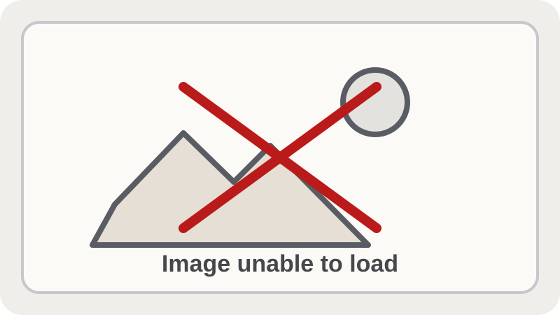

Flow Launcher Brave Profiles

A personal Flow Launcher plugin that helps open and manage Brave browser profiles from a keyboard driven workflow.
I am a recent UC San Diego computer science graduate interested in building practical, reliable software. My work focuses on clear implementation, readable documentation, and systems that are useful to the people who depend on them.
I am especially interested in backend development, data-focused tools, web applications, and developer workflows that make complex information easier to understand and maintain.

A personal Flow Launcher plugin that helps open and manage Brave browser profiles from a keyboard driven workflow.
A machine learning competition submission for mathematical reasoning using Python, vLLM, model sampling, voting, and final answer repair.